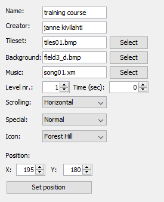

Table of contents
O propósito desse editor é rodar em sistemas operacionais modernos e trazer a maneira mais fácil para fazer levels de Pekka Kana 2. É suposto que ele fique fora de seu caminho enquanto cria levels. Ter tudo importante mostrado com clareza e ser o mais conveniente possível. A interface é designada de acordo com o usuário em mente. para que você consiga ler rápido, ou até passar pelo manual para informações mais importantes e começar trabalhando em seu conteúdo customizado.
Não há guia de início, pois simplesmente não há necessidade!
Apenas vá para File -> New Level, e pronto. Você já pode começar trabalhando em seu nível.
Não esqueça de colocar um bloco de "start" e um bloco de "exit" em cada level que faça!
Screenshot
Aqui tem uma screenshot do editor em ação(clique para abrir uma imagem maior):

Toolbar

| Figure 1: Cria um novo level vazio | Shortcut: CTRL + N |
| Figure 2: Abre um level existente. | Shortcut: CTRL + O |
| Figure 3: Salva o level atual. | Shortcut: CTRL + S |
| Figure 4: Salva o level atual como... | Shortcut: CTRL + Shift + S |
| Figure 5: Seleciona a ferramenta "brush". (See: Tools) | Shortcut: E |
| Figure 6: Seleciona a ferramenta "eraser". (See: Tools) | Shortcut: R |
| Figure 7: Mostra/esconde sprites. | Shortcut: S |
| Figure 8: Seleciona a camada atual. (See: Layers) | Shortcut: 1 - Both |
| Shortcut: 2 - "Foreground" | |
| Shortcut: 3 - "Background" | |
| Figure 9: Seleciona o modo atual. (See: Modes) | None |
Tiles Panel
 Esse painel mostra o conjunto de blocos atual.
Esse painel mostra o conjunto de blocos atual.
Você pode escolher um bloco clicando nele, ou você pode escolher vários de vez, apertando o botão do mouse e arrastando-o para a direita e/ou para baixo.
Os blocos selecionados estão marcados por quadrados brancos e pretos que ficam em volta deles.
Para mudar o conjunto de blocos do level navegue para Properties Panel
Os blocos tem as funções de:
Note: A próxima lista é vinda do manual do editor da Pistegamez, apenas traduzida. Original
Blocos 1-40:
Blocos normais de muro.
Blocos 41-50:
Blocos de muro especiais.
41: Chão especial que não aparece em jogo (invisível).
Jogador ou outros sprites não podem cair através dele.
42: Elevador horizontal.
43: Elevador vertical.
44: Muro trap (vai para cima quando botão azul é apertado)
45: Muro trap (vai para a direita quando o botão verde é apertado)
46: Muro trap (vai para baixo quando botão
47: Muro trap (vai para a esquerda quando o botão verde é apertado)
48: Muro com cadeado. Lock wall vanishes when a key touches it.
Todos os muros com cadeado desaparecerão caso o jogador pegue todas as chaves.
49: Muro de alavanca caveira (foreground). Se o jogador atingir um Skull Swtich sprite,
todos esses blocos desaparecerão.
50: Muro de alavanca caveira (background). Se o jogador atingir um Skull Switch sprite,
um Muro de alavanca caveira (foreground) aparecerá no lugar deste.
Blocos 51-60:
Blocos de morro.
Blocos 61-80:
Blocos animados. Todos esses funcionam como muros normais, porém blocos 61, 66, 71, e 76 são animados de acordo com o resto dos blocos.
Blocos 81-130:
Blocos background normais.
Blocos 131-140:
Blocos de água. Todos são backgrounds. Apenas funcionam como água
caso colocados no background.
Blocos 141-150:
Blocos especiais
141: Vento para a esquerda. Apenas funcionam caso colocados no foreground.
142: Vento para a direita. Apenas funcionam caso colocados no foreground.
143: Bloco de animação de fumaça
144: Bloco de camper (alguns sprites abaixam caso atrás desse bloco)
145: Bloco de fogo (Dá dano em alguns sprites)
146: Botão laranja. Desativa o fogo por um tempo(deve ser colocado em foreground).
147: Botão azul. Deve ser colocado em foreground.
148: Botão verde. Deve ser colocado em foreground.
149: Bloco start. Todo mapa precisa de no mínimo um. Deve ser colocado em foreground.
150: Bloco exit. Todo mapa precisa de no mínimo um. Deve ser colocado em foreground.
Level Panel
The Level Panel is the big one in the middle of the editor, where the background, the tiles and the sprites of the level are drawn.
It will also show your currently selected tile/s or sprite.
Depending on your selected tool you can add, erase and select, one or multiple, tiles from/to the level. (See Tools)
To add a tile to the level, navigate to the Tiles Panel, select the tile/s you want and simply press, or drag, the left mouse button on the level panel.
To add a sprite, navigate to the Sprites Panel, add or select a sprite and press, or drag, on the level panel.
To remove a sprite from the level, simply press or drag on the level panel.
Properties Panel
In this panel you can change the properties of your level.
| Name: | The name of your level, that is going to be displayed in the game. |
| Creator: | Your name, the creator of the level. |
| Tileset: | The tileset of the level. You can change it by pressing the "Select" button. |
| Background: | The Background of the level. You can change that by pressing the "Select" button, too. |
| Music: | The soundtrack that is going to be played, while playing the level. Change it by pressing "Select". |
| Level nr. | The number of this level in your episode. |
| Time (sec): | The time limit of the level, in seconds. Set to zero if you don't want to have one. |
| Scrolling: | The way the level will scroll in game. (Horizontally, Vertically or both) |
| Special: | The weather effects of the level. Normal means none. |
| Icon: | The icon of your level, on the map where you choose the next level to play. |
| Position: | Set the position of your level on the level select map. |
Sprites Panel
 In the sprites panel you can add and remove sprites from/to the level.
In the sprites panel you can add and remove sprites from/to the level.
Pressing the "Set Player" button does that. It sets the selected sprite to the player of the level.
To know which sprite is the player, simply look at the list. The sprite where "Player?:" is set to "true" is the playable character.
The shortcut too add a sprite is: CTRL + A
The episode panel will list all the files an episode, that you can create or load.
The name of the currently loaded episode will appear next to the "Episode:" label.
All the files that belong to the episode will be displayed in the list, in the middle of the panel.
Level are ordered by level number, in ascending order. (1 to X).
The "Remove" button removes the level from the episode. When removing an episode you are asked if you also want to delete the file from your disk.
In legacy mode you can add up to 50 levels to your episode, in enhanced you can decide, but are still limited by the version of your game. (See: Modes)
Settings Dialog

The Settings dialog is accessible via the Extras -> Settings menu.
Path to Pekka Kana 2 is exactly that. It is the path to your installation of Pekka Kana 2.
This is needed to find the games tilesets, backgrounds, music, etc. Click the "Browse" button to change it.
In the "On start" section you can choose what the editor should do after it was executed.
"Load last episode" loads the last episode that you've worked on.
"Create empty level" creates an empty level, with the default settings. (Tileset, background, music, etc.)
"Level limit per episode" limits the amount of levels you can add to your episode. (See: Modes)
Tools
Currently there are two tools available:
Brush:
If you have selected one or multiple tile/s from the Tiles Panel you can add them to your level, by pressing the left mouse button, or holding it down and dragging your mouse.
By pressing the right mouse button once you select the tile that's laying under the mouse cursor.
By holding the right mouse button and dragging it down and/or to the right you can select multiple tiles from the level.
Eraser:
Press any mouse button to delete the underlying tile from the level.
Layers
There are 2 layers to choose from, as well as the option to select both.
| Layer: | Displays: | If selected, places tiles on: |
| Both: | Fore- and background | Fore- and background |
| Foreground: | Foreground | Foreground |
| Background: | Background | Background |
Modes
There are two modes available. These determine the limit for the amount of levels you can add to an episode.
| Legacy: | In this mode you can add up to 50 levels to an episode. This is a limitation of Pekka Kana 2. |
| Enhanced: | In the enhanced mode you can set the limit yourself. It defaults to 100. |
| Note: You have so set the limit to something that your version of the game can support. You can't use a higher limit than that, that's allowed by your version of Pekka Kana 2. |